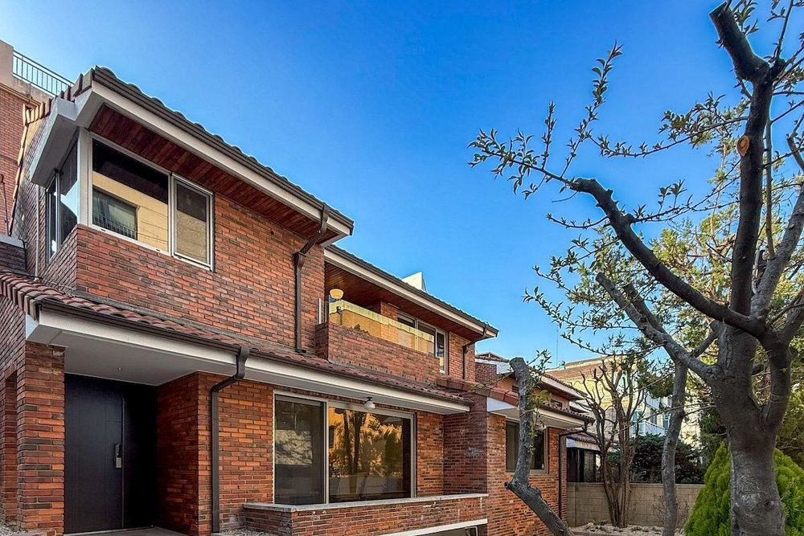
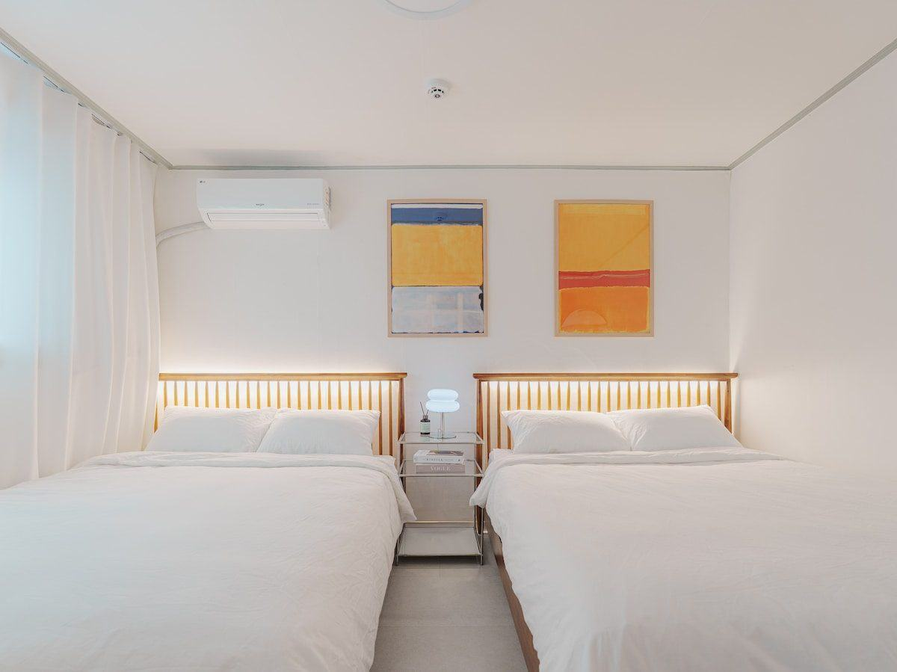

Stay ARN
스테이 아른
서울 강남구 역삼동 · 강남 한복판
정원이 있는 5룸 프라이빗 독채
- 선릉역 도보 5분 (2호선)
- 최대 14인 · 침실 5 · 침대 7
- 단독 정원 · 무료 주차 1대
- 지하 회의실(별채) · 최대 21석
- 셀프 체크인 · 체크인 16:00 / 체크아웃 11:00
서울 · 두 개의 프라이빗 스테이
강남의 정원이 있는 집, 잠실의 아늑한 아파트. 두 곳 모두 서울을 제 집처럼 쓰는 숙소입니다. 머물 곳을 골라 주세요.

스테이 아른
서울 강남구 역삼동 · 강남 한복판
정원이 있는 5룸 프라이빗 독채

바라스 잠실
서울 송파구 잠실동 · 롯데월드·잠실 인접
아늑한 2베드룸 프라이빗 스테이